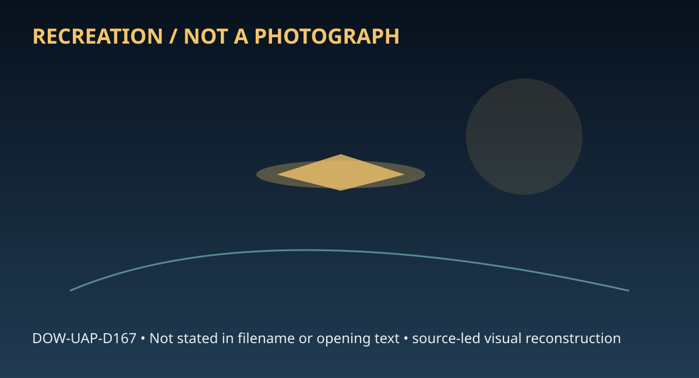

Release 07 / archival case file / DOW-UAP-D167
D167 Project Capella December 2008
This d167 project capella december 2008 places a capella, report thread in a 2008 Italy record.
ID: DOW-UAP-D167
Filename:
DOW-UAP-D167-Project_Capella-December-2008.pdfDate marker: 2008
Location: Italy
Agency or collection signal: Air Force
Pages read: 42

RECREATION / NOT A PHOTOGRAPH. The diagram is an interpretive editorial aid, not source imagery.
What this document says
The opening page's extracted text begins: “Project Capella”
Across the 42 pages, the recurring terms are capella, report. Those details belong to this file, not to a generic case template. Page-level reading follows:
- Page 1: Project Capella
- Page 2: . .___________ ___ _ _ C_H_ __ oo_c_UMATICA RES_EAR_ , L_L_c Report no.001 to Bigelow Aerospace Advanced Space Studies, LLC (BAASS) Project CAPELLA: Towards the development ofa data warehouse in support of research on unusual aerial phenomena and related anomalies B AAP Person 5 San Francisco, orma December 10, 2008 CAPELLA Data Warehowe page 1
- Page 3: O· Project CAPELLA: Towards the development ofa data warehouse in support of research on .unusual aerial phenomena and related anomalies IAAP Person 5 Documatica Research, LLC How this report is organized This report consists of the present overview proposal and three appendices (two of which summarize previously-published work). Together, these four documen
- Page 4: punched cards following a data scheme that had been first used in France in 1962 and expanded at the University of Texas and at Northwestern University in the period 1963-1967. This catalogue served as the source of a series of statistical studies that were published in several works. • Our database, which included all unidentified cases from Project Blue Bo
- Page 5: w II ecific investigation files, are maintained by the NARCAP group under D J?43(a)(2) 1843(a)(2) In recent years, easy access to personal computers and the Internet has made it much easier for interested groups to start their own files. There are at least 30 active catalogues at various points of development, with obvious overlap and widely-varying standard
- Page 6: with the need to test certain theories (and counter-theories) about the nature ofthe phenomena involved. Therefore the work cannot be limited to data acquisition, indexing and storage but extends to the essential tasks ofdynamic data validation and ofproviding the ability for users in the project environment to apply their own interactive screens against the
- Page 7: population already trained in its use. Although EXCEL is not a database system, it has some advantages over ACCESS or other software in our case because it makes it very easy to find, sort, replace and tabulate significant amounts ofdata among a set offlat files. We have mentioned above that many private efforts in this field have suffered from over ambitio
- Page 8: the resulting file is a small one by the standards ofmodem databases, and it does not require a sophisticated software system for editing and searching. This framework, in our estimation, will be useful in supporting the various projects contemplated by BAASS over the first two years. When the size and quality of the available files reaches maturity, the pro
- Page 9: 4. Access to Foreign and Private Catalogues Apart from capturing new data and converting the existing NIOS files, there is a need for integrating as many of the available catalogues as possible under the CAPELLA framework Some of these files are publicly available, or are likely to be made available by authors interested in collaborating with BAASS, but othe
- Page 10: systems expert or computer scientist. Experience in serving a diverse community (such as a campus or multi-site company such as a bank) would be most useful. (ii) A data analyst who captures incoming data and reduces it intelligently to summary text. This person will need to interview witnesses on the phone and to interface with authors of external catalogue
- Page 11: privacy, unless BAASS has special access to recent military data It would also be useful to setup a policy on foreign access. There are centers of excellence in this field outside the United States, notably in France and Spain. Establishing a channel of collaboration with the individuals there could be highly beneficial to BAASS, if it is consistent with the
- Page 12: Appendix A A System of Classification and Reliability Indicators for the Analysis of the Behavior of Unidentified Aerial Phenomena IAAP Person 5 When faced with hundreds or even thousands of reports of unusual aerial phenomena, no serious research.er can undertake any study or hazard any hypothesis before analyzing the patterns buried in th.e reports. These
- Page 13: . •• /' 1843(a)(2) Type I, which was further divided into three subgroups, gathered all the "landing" reports thaG • ••• l1843(a)(2) Iwould later call "close encounters." It may be hard for the modem reader to realize that until the late Sixties, American ufology did not admit that such re rts existed. • • ·1· • • n1 APRO h ded b □ ·d 1843(a)(2) 1843(a)(2) A
- Page 14: •• 2 (a term later immortalized byl1843(a)( ) ~; and the objects observed "at some distance," which he further divided into three categories: NL for Nocturnal Lights DD for Daylight Disks RV for Radar-visual l1843(a)(2) Iwas well aware that these divisions were arbitrary, and he remarked himself that the categories "may not be mutually exclusive." The major
- Page 15: The work we have done in recent years with four parallel computer catalogues has led us to suggest a practical solution to the problem. A Classification System based on the Behavior of the Phenomenon The major flaw in previous classification systems is that they take as their basis the position of the observer, which is arbitrary and changing, rather than th
- Page 16: Finally, we place under ANS the cases in which anomalous injuries or deaths are reported, such as unexplained wounds or spontaneous combustion. Claims ofpermanent healings would also fit within this category. We now come to the UFO reports themselves, which we will divide, followind1843(a)(2) into close encounters and distant sightings. We see no reason to c
- Page 17: MA4 covers instances of maneuvers accompanied by a sense of transformation of reality for the percipient. MAS involves reports of permanent injury or death related to a maneuvering object in the sky. Flybys The classification continues with the "Flyby" cases: FB 1 is a simple sighting ofan unexplained object "flying by" in the sky without discontinuity. It i
- Page 18: researchers have rarely applied it in support of their work. (A notable exception is the "quality index" proposed by Spanish researchersl1843(a)(2) !and 1843 but it may be too detailed • (a)(2) for practical use on large databases.) The system needs to be simple enough to be applied quickly, and with enough mnemonic value to insure it does not require consta
- Page 19: Thus a rating of 222 or better (meaning that each of the three digits is 2 or higher) indicates events reported through a reliable source, in which a site visit has been made, and where a natural explanation would require the gross alteration ofat least one parameter. Equipped with this reliability code and the classification described above, it is possible
- Page 20: I . AppendixB A six-layer model for Anomalous Phenomena: Incommensurability, Orthodoxy and the Physics of Consciousness I_ ... P_P_er-so_n_s __.....lan~AAP Person 58 Abstract The main argument presented in this paper is that the continuing study of unidentified aerial phenomena ("UAP") may offer an existence theorem for new models of physical reality. The cu
- Page 21: The Challenge of High Strangeness The rational study of reported cases of Unidentified Aerospace Phenomena (UAP) is currently at an impasse. This situation has as much to do with the incomplete state of our models of physical reality as it does with the complexity of the data. A primary objection to the reality of UAP events among scientists is that witnesse
- Page 22: order to explore these undiscovered facets. This is why continuing study of reported UAP events is important: It may provide us with an existence theorem f or new models ofphysical reality. Much of the recent progress in cosmological concepts is directly applicable to the UAP problem: Traversable wormholes (3-dimensional hypersurface tunnels) have now been d
- Page 23: four decades of the SETI program following a dominantly radio/microwave (RMW) oriented search scheme. Given the failure of this initial approach, in the last two decades alternative SETI programs have been proposed. They exploit coherent laser optical/IR (COSETI), holographic signals and worldwide web detection schemes, as well as ideas to search for ETI art
- Page 24: This leads the present authors to speculate that a new synthesis can be found by examining the full context of the UAP phenomenon -- including its apparently "absurd" characteristics -- in terms of a six-layer model. The model uses the framework of the incommensurability problem and concepts borrowed from semiotics. UAP - The Need for a Unified Approach What
- Page 25: 843 2 as they can be extracted from earlier works about UAP phenomenologyl... 1_ _ _(a_)_( _)______, or from the current NIDS database. Layer I: First of all is the physical layer, evident in most accounts describing an object that: ► occupies a position in space, consistent with geometry ► moves as time passes ► interacts with the environment through thenna
- Page 26: Layer III: The third layer has to do with the psychology of the witnesses and the social conditions that surround them. Human observers tend to see UAP while in their normal environment and in normal social groupings. They perceive the objects as non-conventional but they try to explain them away as common occurrences, until faced with the inescapable conclu
- Page 27: Layer VI: The sixth category could be called cultural. It is concerned with society's reactions to the reports, the way in which secondary effects (hoaxes, fiction and science-fiction imagery, scientific theories, cover-up or exposure, media censorship or publicity, sensationalism, etc.) become generated, and the attitude of members of a given culture toward
- Page 28: relegated to the category of exaggerated or ill-observed facts. All of us who have investigated close-range sightings have become familiar with these effects. c) The purpose of the technology may be cultural manipulation - possibly but not necessarily under control of a form of non-human intelligence - in which case the physiological and psychological effect
- Page 29: 1843 2 vary from civilization to civilization 1..___(_a_>(_>___. If ETs and UAP entities have different biologies and live in considerably different environments from humans, they may well have different goals for their science, and radically different criteria for evaluating the success of their science. Their explanatory mechanisms, their predictive concer
- Page 30: optical signals which were not false positives but also not repeated by their source) while the latter can be the cause of the current impasse in the study of UAP phenomena. Semiotics ln his analysis of the communication problem SETI Institute psychologistl1843(a)(2) Ihas advocated the application of semiotics, the general theory of signsl1843(a)(2) I !1843(
- Page 31: . It is also helpful to realize that icons are not specific to the visual sensory modality. It is possible to have a sign that physically resembles the signified in a nonvisual way. For example, the fly Spilomyia hamifera beats its wings at a frequency very close to,the wing-beat frequency of the dangerous wasp Dolichovespula arenaria. As a result, when one
- Page 32: The UAP and Abduction Problem The aforementioned behavior of UAP is not fundamentally absurd. This apparent absurdity is merely a reflection of the cognitive mismatch or the Incommensurability Problem that exists between humans and the phenomenon. In this particular case, UAP are sending the message and we are the recipients. The message(s) they are sending
- Page 33: atmosphere with either the look or trajectory of a meteor or hidden within a meteor shower, behaving like dark meteors without the associated optical signature, hiding within an artificial or natural cloud or a satellite reentry, behaving as pseudo-stars sitting stationary over certain regions, or mimicking man-made aircraft's aggregate featuresl1843(a)(2) I
- Page 34: References IMP Person 58 1843(a)(2) IMP Person 5 ~p Person ··· -·•EJ and AAP Person 58 Physics ofHigh Strangeness page 15
- Page 35: AAP Person 5 ~p Person ...EJa~~p Person Physics ofHigh Strangeness page 16
- Page 36: Appendix C Data Structures and Software Platforms in support ofAerial Phenomena Research: Proposed Organization, with examples IMP Person 5 I Documatica Research, LLC The implementation ofdata bases for the purpose ofresearch poses unusual challenges for the software analyst. While an industrial database might consist of milJions of items in a rapidly chang
- Page 37: catalogue of pilot sightings. We propose to use it as one ofthe elements in the present work (see definitions in Appendix A). In the same work we also established an "SVP" code for reliability indicators, tracking (S) the level of the source for the data, (V) the degree to which the site was visited or inspected and (P) the probability for a conventional exp
- Page 38: Screen 2: "Witnesses and references" I. Catalog entry (case) number 2. Location (repeated from Screen I) 3. Witness(es) 4. Primary source 5. Secondary reference Screen 3: "Quality control" 1. Catalog entry (case) number 2. Location (repeated from Screen 1) 3. Regional code (three letters, such as NAM for N.America, WEU for Western Europe) 4. Country code (th
- Page 39: Screen 5: "Layer I: Physics, continued" 1. Catalog entry (case) number 2. Location (repeated from Screen 1) 3. Lights, beams or other projections 4. Electromagnetic effects 5. Ground traces (including vegetation effects) 6. Material sample(s) 7. Trajectory characteristics 8. Radar return characteristics 9. Photographs or video? (YIN) Screen 6: "Layer II: ant
- Page 40: • Screen 9: "Layer V: Psychic effects" and "Layer VI: Cultural effects" I. Catalog entry (case) number 2. Location (repeated from Screen 1) 3. Psychic effects: reports ofout-of-body experiences, associated poltergeist orother phenomena before or after the sighting 4. Cultural effects, including religious, social or media reactions Screen 10: Hyperlinks 1. Ca
- Page 41: I Catalog WHEN? WHERE? WH..\T? tim~ Jur. 2 Entrv Dav Monti, Year Location Oe<criPliou Cl_a,,.--.if. hh:mm min. J N-301 7 I l!M6 San Rmel (Outside Movie~) Siu:IOX plane disk with hwm,. Weatbcr.OEAR.sun scttin• Cokr.limt brown OD Im, silent FBI 19:00 I 4 N-223 7 I 1943 Orville (While Wall<ino In'The Woods) Shaoe:disk. Weather.bot. CLEAR. beautiful Color:brimt
- Page 42: • 1843(a)(i2) AAP Person 7 Cnratog WH£R£? WHO SAW IT? Eu- Locatlou Witnt5SOS N-301 San Rafael IOulSide Movie lbeaccr) 1843(a)(2) N-223 Orville /While Wa""•• InThe Woodt\ N-163 Rlvuaide /OverThe CiM N-389 San Die•o N-260 Dulce ISdnkln• Lake S OfDulce\ N-412 Siem National Fcrest /SI-•• Peak) N-490 SallOCISea /Usaf Bomb••• 11•"-' N-731 Demln• 110 Miles S\ N-859
Historical context and disclosure schema
Read in context, this record belongs to the 2008 information environment: Air Force paperwork, a Italy setting, and the reporting conventions visible in the source. Its broader disclosure value is procedural as well as anecdotal: it shows how an observation, material question, investigation, or analytical program was routed, described, and preserved. That makes it comparable to other Release 07 records without collapsing unlike evidence into one event.
Evidence limits
The source establishes that this document exists and records what its authors or quoted witnesses wrote. It does not, by itself, prove the identity, performance, origin, or physical reality of the reported subject. Extraction preserves wording but cannot restore missing attachments, authenticate provenance, or independently validate testimony. Interpretations beyond the page-specific record remain hypotheses.
Source: supplied PDF in research/tranche-07. This article is a research aid, not a claim that the reported object was non-human.